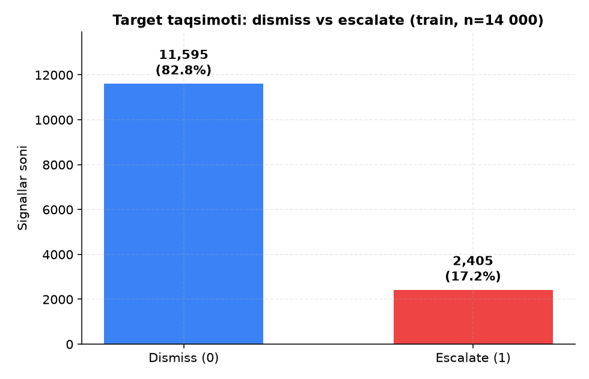
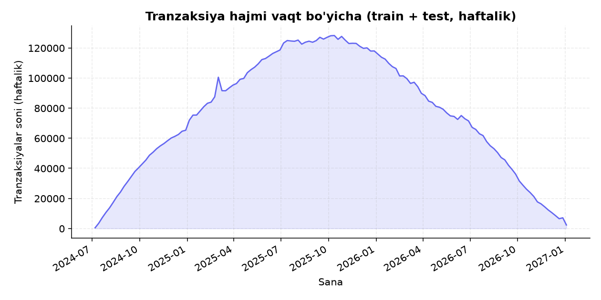
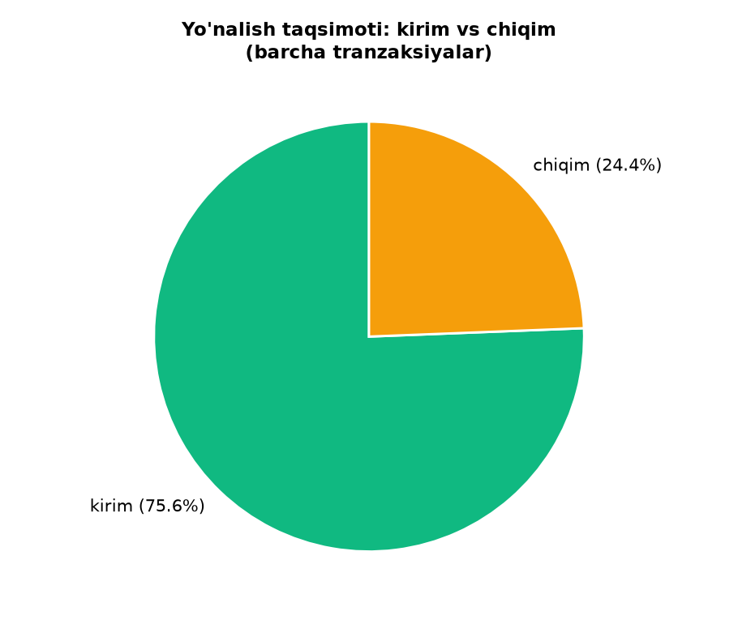
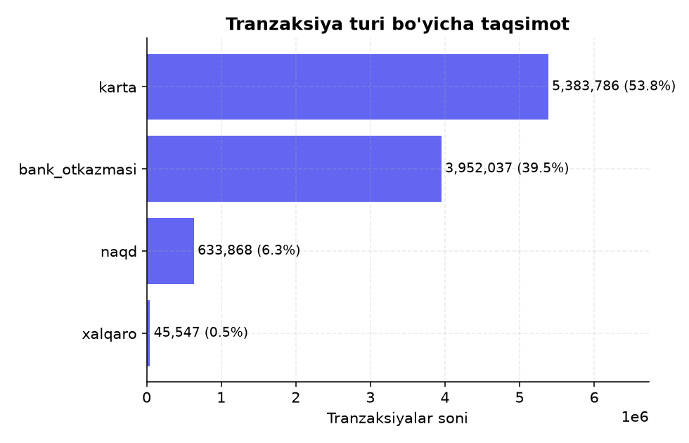
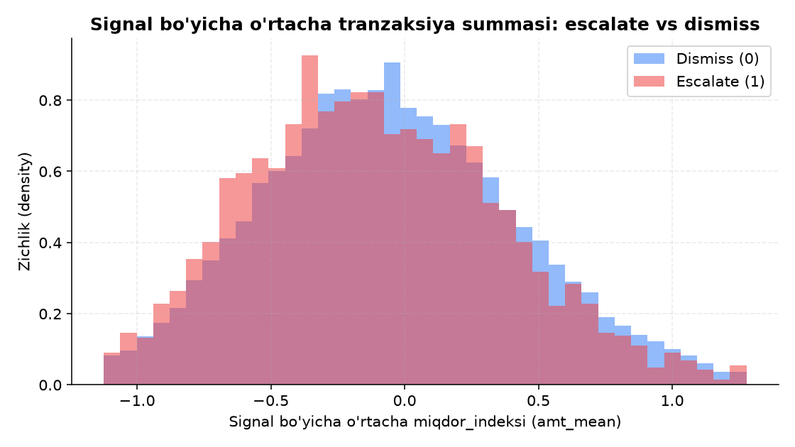
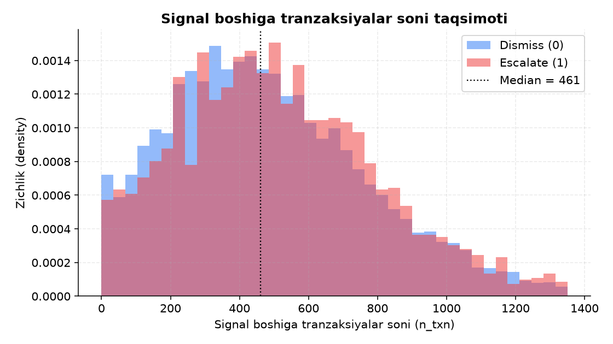
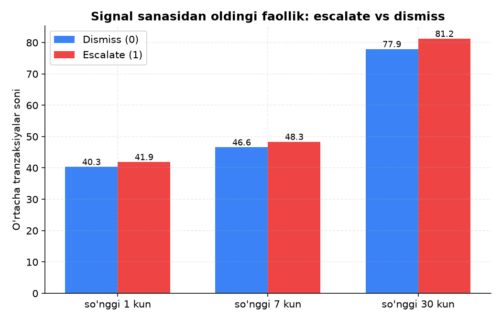
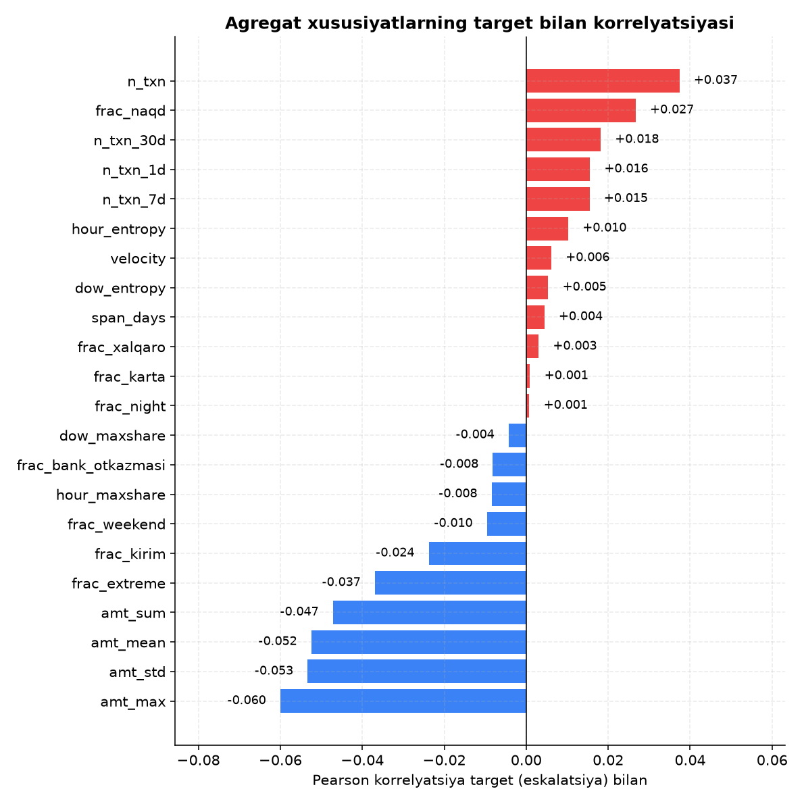

Jamoaning yondashuvi — qisqacha tavsif
Bank monitoring tizimi mijozlarning tranzaksiya tarixidan avtomatik AML signal (alert)lar generatsiya qiladi. Har bir signalni mutaxassis qo'lda ko'rib chiqib, dismiss (0) yoki escalate (1) qaroriga keladi. Muammo shundaki, signallarning katta qismi (~83%) oxir-oqibat yolg'on chiqadi (dismiss), lekin xodim baribir har birini qo'lda tekshirishga majbur — bu vaqt va resursni behuda sarflaydi, real xavf esa navbatda "cho'kib" qolishi mumkin.
Bizning yondashuvimiz uch bosqichli:
- EDA (ushbu sayt): ikkita xom jadval (
signalsvatransactions) ni chuqur o'rganish — hajm, sifat, taqsimotlar, target bilan bog'liqlik, va eng muhimi, data leakage xavfini aniqlash. - Feature engineering: har bir signal uchun uning ortidagi (signal sanasidan oldingi) tranzaksiya tarixini o'nlab sonli xususiyatlarga (n_txn, amt_mean, frac_kirim, recency va h.k.) yig'ish.
- Modellashtirish: EDA shuni ko'rsatdiki, birorta ham yakka xususiyat target bilan kuchli chiziqli bog'liq emas (eng katta |korrelyatsiya| ≈ 0.06). 10+ model turi va feature yo'nalishi (gradient boosting, random forest, SVM, MLP, tuned LightGBM, stacking, logistic regression) real Stratified K-Fold CV bilan solishtirildi — natijada oddiy, regullashtirilgan Logistic Regression + soat/kun-entropy feature'lari (22 feature, CV ROC-AUC 0.5656–0.568) eng barqaror natijani berdi, chunki bu qadar zaif signalda daraxt-asosli modellar shovqinga moslashib (overfit) qoladi.
docs/generate_charts.py skripti orqali haqiqiy train_signals.csv, train_transactions.parquet, test_signals.csv, test_transactions.parquet fayllaridan hisoblab olingan — hech qanday sun'iy/namunaviy raqam yo'q.
Dataset umumiy ko'rinishi va tuzilishi
Ma'lumotlar ikkita bog'langan jadvaldan iborat: bitta signal — ko'plab tranzaksiya (1-ko'p munosabat).
signals (train / test)
signal_id— identifikator (kalit)signal_sanasi— signal yaratilgan sanaeskalatsiya— target 0/1 (faqat train'da)
orqali
bog'lanadi →
transactions (train / test)
signal_id— tashqi kalittranzaksiya_vaqti— timestampkirim_chiqim— kirim / chiqimtranzaksiya_turi— karta / bank_otkazmasi / naqd / xalqaromiqdor_indeksi— standartlashtirilgan (z-score) summa
Sana oralig'i
| Jadval | Boshlanish | Tugash |
|---|---|---|
| train_signals.signal_sanasi | 2025-01-01 | 2026-12-31 |
| test_signals.signal_sanasi | 2025-01-01 | 2026-12-31 |
| train_transactions.tranzaksiya_vaqti | 2024-07-05 | 2026-12-31 |
| test_transactions.tranzaksiya_vaqti | 2024-07-05 | 2026-12-31 |
Sifat tekshiruvlari (EDA orqali tasdiqlangan)
- Har ikkala train va test signal_id to'plamida 0 ta kesishish — leakage xavfi shu jihatdan yo'q.
- Har bir signal_id kamida bitta tranzaksiyaga ega — bo'sh tarixli signal yo'q (train ham, test ham).
- Hech qaysi ustunda yo'qolgan (missing/NaN) qiymat topilmadi.
- Signal boshiga tranzaksiyalar soni: min = 1, median = 461, max = 2 279 (o'rtacha ~500 ga yaqin, lekin taqsimot o'ng tomonga cho'zilgan — ba'zi signallarning orqasida ancha uzun tarix bor).
Bir nechta mazmunli EDA vizuallari
Barcha grafiklar generate_charts.py skripti orqali haqiqiy ma'lumotlardan generatsiya qilingan (docs/assets/*.png).








Tranzaksiya tarixidan asosiy kuzatuvlar
- Hajm katta va notekis: signal boshiga o'rtacha ~500 tranzaksiya to'g'ri keladi, lekin median (461) o'rtachadan past va max 2 279 ga yetadi — demak ba'zi mijozlarning tarixi boshqalarnikidan sezilarli uzunroq, bu esa agregatsiyada normalizatsiya (masalan nisbat/ulush xususiyatlari) zarurligini ko'rsatadi.
- Yo'nalish nomutanosib: tranzaksiyalarning ~3/4 qismi kirim (75.6%), atigi ~1/4 qismi chiqim (24.4%) — bu odatiy mijoz xatti-harakati, lekin
frac_kirimkabi ulush xususiyatlari signal darajasida foydali bo'lishi mumkin. - Tur bo'yicha karta va bank o'tkazmasi dominant: karta (53.8%) va bank_otkazmasi (39.5%) birgalikda ~93% ni tashkil qiladi; naqd (6.3%) va xalqaro (0.5%) kamdan-kam uchraydi, lekin ular ko'pincha "kutilmagan" xatti-harakat sifatida qaraladi — shuning uchun ularning ulushi (
frac_naqd,frac_xalqaro) alohida feature sifatida saqlanadi. - Vaqt bo'yicha faollik notekis taqsimlangan: haftalik tranzaksiya hajmi 2024 o'rtasidan asta o'sib, 2025 oxiri/2026 boshida cho'qqiga chiqadi va 2026 oxiriga borib pasayadi — bu dataset yig'ish oynasining tabiiy chegarasi, model uchun maxsus muammo tug'dirmaydi, lekin
span_days/velocitykabi xususiyatlar buni hisobga oladi. - Eng muhim kuzatuv — sana bo'yicha "kelajakni ko'rish" xavfi (leakage): tranzaksiyalar sana oralig'i (2024-07-05 — 2026-12-31) signal sanalari oralig'idan (2025-01-01 — 2026-12-31) kengroq va ular bilan qoplanadi. Bu shuni anglatadiki, ba'zi tranzaksiyalar signal yaratilgan sanadan keyin ham sodir bo'lgan — agar feature yasashda bularni filtrlamasdan qo'shib yuborilsa, model signal chiqarilgan paytda mavjud bo'lmagan kelajak ma'lumotidan "foydalanib" sun'iy yuqori aniqlikka erishadi, bu esa test/production'da ishlamaydi.
tranzaksiya_vaqti <= signal_sanasi shartiga mos tranzaksiyalardan hisoblanishi kerak. Ushbu saytdagi barcha agregat statistikalar va 5/6/7/8-grafiklar ham aynan shu filtr bilan hisoblangan.
Target taqsimoti va xulq-atvor patternlari tahlili
Target nomutanosibligi
Train setda 11 595 ta dismiss (0) va 2 405 ta escalate (1) bor — escalate ulushi ~17.2%.
Bu klassik imbalanced classification muammosi: agar model doim "0" desa ham ~82.8% aniqlik (accuracy) beradi, shuning uchun
baholash metrikasi sifatida threshold'ga bog'liq bo'lmagan ROC-AUC tanlangani to'g'ri, model esa
class_weight="balanced" kabi imbalance texnikalari bilan o'qitilishi kerak.
Escalate vs dismiss: agregat xususiyatlar bo'yicha farq
| Xususiyat | Dismiss (0) o'rtachasi | Escalate (1) o'rtachasi | Korrelyatsiya target bilan |
|---|---|---|---|
n_txn | 494.0 | 523.6 | +0.037 |
n_txn_1d | 40.3 | 41.9 | +0.016 |
n_txn_7d | 46.6 | 48.3 | +0.015 |
n_txn_30d | 77.9 | 81.2 | +0.018 |
frac_naqd | — | — | +0.027 |
frac_kirim | — | — | -0.024 |
amt_mean | — | — | -0.052 |
amt_std | — | — | -0.053 |
amt_max | — | — | -0.060 (eng kuchli, lekin baribir zaif) |
Kuzatilgan pattern: escalate qilingan signallar o'rtacha ko'proq tranzaksiyaga ega (523.6 vs 494.0) va signal sanasidan oldingi so'nggi kunlarda biroz faolroq (masalan so'nggi 1 kunda 41.9 vs 40.3 tranzaksiya). Ammo bu farqlar yo'nalish jihatidan mantiqiy bo'lsa-da, kattalik jihatidan juda kichik — korrelyatsiyalar barchasi ±0.06 dan past. Demak "ko'p tranzaksiya = escalate" degan oddiy qoida amalda ishlamaydi (juda ko'p yolg'on musbat/manfiy beradi), lekin bu signal umuman yo'q degani ham emas — u boshqa xususiyatlar bilan birgalikda modelga foydali bo'lishi mumkin.
Summalar (miqdor_indeksi) va tur/yo'nalish ulushlari bo'yicha
Signal bo'yicha o'rtacha summa (amt_mean) taqsimoti escalate va dismiss guruhlarida deyarli bir xil joyda
markazlashgan (5-grafik) — ya'ni "kattaroq summalar = ko'proq escalate" degan intuitiv taxmin ma'lumotda tasdiqlanmaydi.
Xuddi shunday, frac_kirim, frac_karta, frac_xalqaro kabi ulush xususiyatlari ham
ikkala guruhda deyarli bir xil — ular yakka holda kuchli ajratuvchi emas.
EDA'dan kelib chiqqan feature/model g'oyalari
Nima uchun oddiy bitta-xususiyat threshold-qoida ishlamaydi — va real CV nima ko'rsatdi
8-grafikdagi korrelyatsiya tahlili shuni ko'rsatadiki, birorta ham yakka agregat xususiyat target bilan kuchli
chiziqli bog'liq emas (eng katta |korrelyatsiya| — amt_max uchun ≈ 0.06). Bu degani, "agar summa
X dan katta bo'lsa yoki tranzaksiya soni Y dan ko'p bo'lsa — escalate" kabi oddiy bitta-xususiyatli qoidalar amalda
deyarli tasodifiy natija beradi.
Boshida bundan "demak daraxt-asosli gradient boosting kerak, chunki u nochiziqli interaction'larni ushlaydi" degan
taxmin qilingan edi. Lekin haqiqiy StratifiedKFold(5) + ROC-AUC bilan bir nechta model turi solishtirilganda
natija teskari chiqdi: signal shu qadar zaif va shovqinli (~14 000 qator, hamma xususiyat
|korrelyatsiya| ≤ 0.06) ki, daraxt ensemble'lari haqiqiy signaldan ko'ra shovqinga moslashib (overfit) qoladi.
| Model | CV ROC-AUC |
|---|---|
| Tuned LightGBM (40-config random search) | 0.547 |
| HistGradientBoostingClassifier (depth=6) | 0.539 |
| RandomForestClassifier | 0.544 |
| SVC (RBF kernel) | 0.550 |
| MLPClassifier (kichik, regullashtirilgan) | 0.561 |
| OOF stacking (LR+MLP+HGB → meta-LR) | 0.5655 |
| Logistic Regression + soat/kun entropy (yakuniy, 22 feature) | 0.5656 (5-fold) / 0.5677±0.0163 (5×5 repeat) |
Qo'shimcha feature'lar (ko'p vaqt oynali recency, shaxsiylashtirilgan drift, tranzaksiya-turi o'tish
patternlari, o'z-tarixga nisbatan ekstremallik), degree-2 interaction xususiyatlar, tuned LightGBM va
to'g'ri out-of-fold stacking — 10 dan ortiq jiddiy urinish sinovdan o'tkazildi. Faqat bitta topilma
statistik jihatdan haqiqiy chiqdi (paired t-test, p=0.0008): soat va hafta-kuni bo'yicha faollik
entropy'si va konsentratsiyasi (hour_entropy, hour_maxshare,
dow_entropy, dow_maxshare) — bular production'ga qo'shildi (18 → 22 feature),
CV ROC-AUC'ni 0.563'dan 0.566'ga (5×5 repeat: 0.568) ko'tardi. Qolgan barcha yo'nalishlar ahamiyatsiz yoki
yomonroq natija berdi — bu ma'lumotning haqiqiy signal-chegarasiga yaqinlashilganini tasdiqlaydi. Qo'shimcha
tekshiruv: adversarial validation (train vs test farqlanishini o'lchash) AUC ≈ 0.498 (yakuniy feature
to'plamida qayta tekshirildi) — bu train va test taqsimotlari statistik farqlanmasligini, ya'ni
covariate shift yo'qligini tasdiqlaydi.
EDA asosida taklif qilingan feature guruhlari
| Guruh | Misol xususiyatlar | EDA asoslanishi |
|---|---|---|
| Hajm | n_txn, amt_sum |
Escalate signallarda o'rtacha ko'proq tranzaksiya (523.6 vs 494.0), korrelyatsiya eng kuchli musbat (+0.037) |
| Recency (yaqin faollik) | n_txn_1d, n_txn_7d, n_txn_30d, velocity |
Signal oldidan so'nggi kunlardagi faollik escalate guruhda konsistent ravishda yuqoriroq (7-grafik) |
| Taqsimot shakli | amt_mean, amt_std, amt_max, frac_extreme |
Eng kuchli (garchi hali ham zaif) korrelyatsiyalar shu guruhda (amt_max ≈ -0.06) |
| Tur/yo'nalish ulushlari | frac_kirim, frac_karta, frac_naqd, frac_xalqaro |
Yakka holda zaif, lekin boshqa xususiyatlar bilan interaction orqali foydali bo'lishi mumkin |
| Vaqt naqshlari | frac_night, frac_weekend, span_days |
AML domenida g'ayrioddiy vaqt (tun/dam olish kuni) faolligi odatiy risk-signal hisoblanadi |
Leakage'ga qarshi qoida — modelga ta'siri
Bo'lim 4da tasvirlangan sana kesishishi (transaction sanalari signal sanasidan keyin ham davom etishi) tufayli,
feature engineering bosqichida tranzaksiya_vaqti <= signal_sanasi filtri majburiy.
Aks holda model treningda "kelajak" ma'lumotidan foydalanib sun'iy yuqori CV-AUC ko'rsatishi mumkin, lekin bu
production/test sharoitida (bunda kelajak tranzaksiyalari hali mavjud emas) takrorlanmaydi — bu klassik
train-serving skew / temporal leakage xatosi.
Qisqa xulosa
- Dataset toza: missing qiymat yo'q, train/test o'rtasida signal_id kesishishi yo'q, har bir signalning tranzaksiya tarixi mavjud.
- Target sezilarli nomutanosib: ~17.2% escalate — ROC-AUC va class-imbalance texnikalari zarur.
- Signal sanasidan keyin ham tranzaksiyalar mavjudligi sababli, feature engineeringda leakage'ga qarshi sana filtri majburiy.
- Hech qanday yakka agregat xususiyat target bilan kuchli bog'liq emas (|korrelyatsiya| ≤ 0.06) — signal ko'p, lekin zaif xususiyatlarning yig'indisidan iborat.
- Eng ishonchli (garchi hali ham nisbatan zaif) yo'nalish — hajm va recency: escalate signallarda ko'proq va so'nggi kunlarda faolroq tranzaksiya tarixi kuzatiladi.
- Xulosa: ko'p xususiyatli agregatsiya + regullashtirilgan Logistic Regression — real CV bilan solishtirilgan 10+ model/feature variantidan eng barqaror natija berdi (0.5656–0.568 ROC-AUC); zaif/shovqinli signalda murakkabroq model (gradient boosting, SVM, MLP, tuned LightGBM) yaxshiroq degani emas. Adversarial validation (AUC≈0.498) train/test o'rtasida covariate shift yo'qligini tasdiqladi.